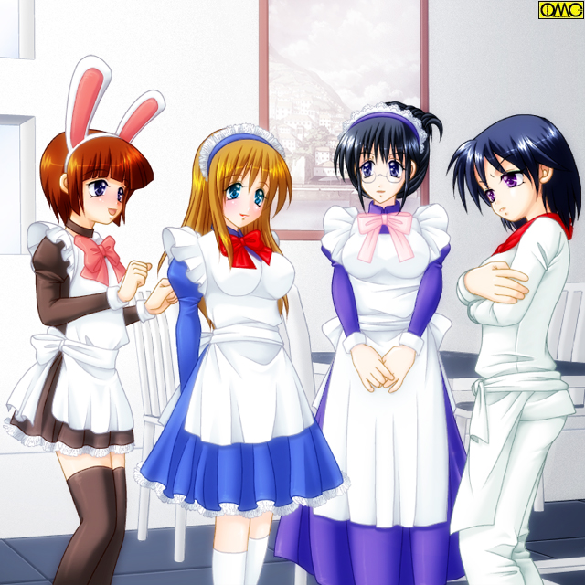
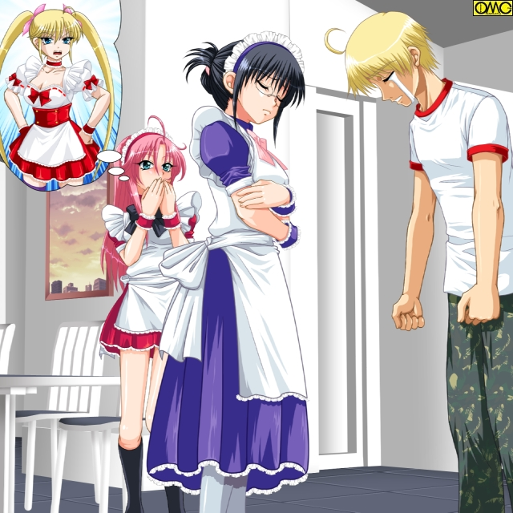
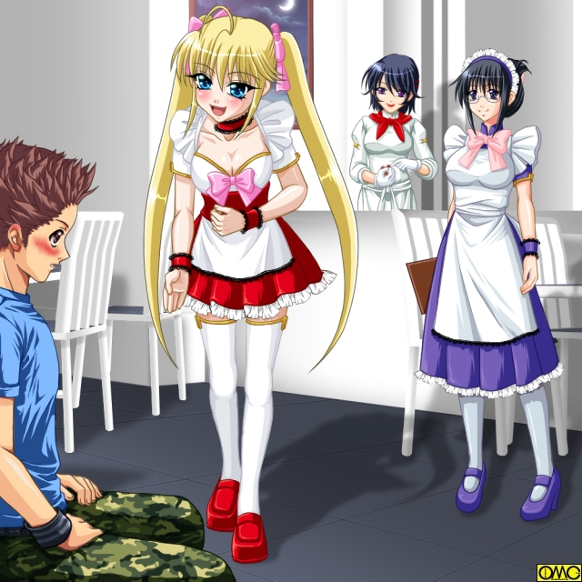

木曜日。「Ｔｗｉｎｋｌｅ☆Ｓｔａｒ」の週の初め。
連休明けの愛美子の異変に常連客が気づいた。
「愛美子さん。なんかあったの？」
週に三回は通う大学生が図々しく尋ねる。
彼が愛美子に気があるのは明白だ。
「べ、別に」
あからさまに動揺する。ウソのつけないタイプだ。
火曜日の痴漢騒動の影響はなくなっていたと思っていたが何処か態度に出ていたらしい。
愛美子は心中で舌打ちする。
だからことさら強く否定する。
「あん？ なに？ 失恋でもしたと思ってんの？ 冗談じゃないわ。あたしは自分より弱い男にときめいたりしないわよっ」
半分は芝居。半分は本音。
「へえ。だったら俺の方が強かったらときめいてくれるの？」
「う……」
軽い揚げ足取り。愛美子は言葉に詰まる。そこに歩み寄るメガネの店長。
「ご主人様。それでは余興として愛美子と『腕相撲』などいかがですか？」
かなめが柔らかい口調で進言する。
「ちょっと。勝手にそんな？」
「別にいいよ。『女の子』相手に腕相撲で勝っても自慢にならないし」
男のこの言葉でかつては柔道の選手。瀬能金太郎であった愛美子はカチンときた。
「いいわよ。あたしに勝てる気ならかかってらっしゃい」
久しぶりに得意のジャンルで火がついた愛美子。
戸惑う大学生だが、例え負けても愛美子の手を握れる。損はない。
空きテーブルを使い両者が陣取る。がっちりと手を合わせる。他の客が興味深げに見ている。
当の対戦相手は
（うっわぁーっっっ。柔らけーっっ、小せぇーっ。それに顔が間近。いい匂いするし）
平たく言うと『萌え』ていた。
一方の愛美子は…
（こうして握ると手が大きい、逞しいなぁ。貧弱に見えたのにやっぱり男ね。ああ…力強いなぁ…はっ！？）
男にときめいた自分に気がつき、ぶんぶんと頭を振る。
そして勝負に集中すべく真剣な表情に。
その真摯な表情の美しさに息を呑む対戦相手。思わずつぶやく。
「……綺麗だ……」
「え？」
表情が崩れる。きょとんとしたそれに。これはこれで可愛らしい。
「Ｒｅａｄｙ？ Ｇｏ！」
かなめの号令も聞こえなかった。
ぎりぎり残っていた男としての闘争本能でスイッチが入るが出遅れは否めない。既にだいぶ傾いている。
ねじ伏せられるのは避けた。しかしいくら力を入れても押し返せない。
ジリジリと倒され、ついには敗北する。
対戦相手はほっとした表情は見せるが、勝利には喜ばない。
「力勝負で女に負けたら恥。負けないでほっとした」と読み取れる。
同時に美少女の手を長く握り、そして作ったものではない表情を拝めてにやけた表情になる。
一方の愛美子は愕然とする。
こんな頭しか使ってないような奴に負けるなんて…それも単純な力勝負で。
「これでわかったでしょう？ 今の貴女はか弱い女の子だって。もう無茶はしないでね」
それを思い知らさせるかなめの策略だった。
「ま…まだまだ！」
逆効果だった。闘争心に火をつけた。
純然たる女性とてファイターはいるのだ。
まして本来は男の上に格闘家。負けたままではいられない。
「よっし。それじゃ今度は俺が」
別の常連が挑んでくる。先の対戦相手より少し大きい。
「いいわよ」
相手にとって不足なし。むしろ力の強いほうなら望むところ。
愛美子は相手の手を取る。
テーブルに肘をつけるだけに上半身をぐっと落とす。
つまり「お尻を突き出すポーズ」に。
（おおっ！）
今度はそれを認識していた男性客の視線がヒップに集中する。
ただでさえ短めのスカート。下着が見えそうだ。
意外に視線というものは気がつくものである。
愛美子は自分の下半身に男の目が集まっていることを察した。
あわてて手を離して、スカートを押さえる。
赤くなる頬で上目遣い。
「みたでしょう？」
見えてないのだが後ろめたい男たちは過剰に否定する。
もちろん愛美子は信じない。つい何も考えずに
「スケベ！ 変態！」
女ならではの罵声を叫んでしまう。
愛美子の「ツンデレ」はキャラとして知られているので、むしろこれはあっていたからトラブルにはならない一言。
それよりも愛美子としては今の一言を発したことで、自分が精神的にも女になっていると思い知った。
そして認めたくないが肉体的にもか弱い女。
男にとっての性の対象とも。
仕事を終えて帰宅。
メイクを落として入浴。
きめ細かな白い肌。ブロンドのロングヘア。たわわに実る二つのふくらみ。勝手の自分の太もも程度のサイズにまで細くなったウエスト。男を受け入れるための股間。
今ではすっかり見慣れて何も感じなくなった美少女の裸身が姿見に映る。
（自分は完全に「女の子」なんだ…力じゃとても男にかなわない…男として生まれて生きてきた今まではなんだった…でも）
そう。今は女なのである。鏡の向こうの自分が雄弁に物語る。
（こうして着飾り、男に大事にされ、そしてなにより優しい気持ち。これは紛れもなく女だからなのね。「あたし」は本当に女なんだなぁ）
まだ本来の口調は残るが、思考の際の言葉遣いも女のものにシフトしていた。
女としてすごし、女として認められる日々によって愛美子の男の部分が少しずつ書き換えられていく。
（どうせ三月までだし。それなら長い人生の少しの間。徹底して女として振舞うのもいいかもスね）
いわゆる『腹をくくった』愛美子である。
ここに来てようやく考えを固めた愛美子。この辺りから女らしさが増していく。
簡単にしていたメイクをきちんとするようになった。
ファッションも手を抜かなくなってきた。
そして夜道を一人で歩くこともかなり減って来た。
それが呼び水になったわけでもあるまいが、この頃には他の面々も女性化が顕著になっていた。
女になって半年。体を駆け巡る女性ホルモンが思考にまで影響していたのかもしれない。
特に肉体的に「思春期」のラビは、もともとそういう指向もあり女の子らしくなっていく。
ナツメだけは接客じゃないこともありそんなに変わらなかった。
だがちょっとした事件がおきた。
カラフルな可愛い看板は子供にも受けはよかった。
メイド喫茶というものを知らないような親子連れが店に来て驚くこともある。
ただし味自体はイロモノではないのでその評判は悪くない。
また『喫茶店』には違いないのでお茶にあわせてケーキもある。
母娘の客からケーキセットの注文が入った。
ただケーキを提供するだけ。別に自分でなくてもいいだろう。
そんな思いがナツメの態度に出た。
「瀬能っ」
接客で一杯一杯とはいえど、おいたままのセットに気がつかない愛美子につい怒鳴りつけてしまった。
「す、すいませんス。ナツメさん」
平謝りの愛美子。その直後だ。
「ママ。あのお姉ちゃん恐い」
子供のストレートな一言はナツメの心を直撃した。
「ケーキセット。持ってきましたわっ。お嬢様」
実は子供好きな愛美子。実に見事に可愛いメイドさんを演じる。
それで幼女は機嫌を直した。しかし
（恐い……やっぱ態度も改めないとダメなのか）
はっきり言われたことで愕然となっていたナツメである。
その夜の「反省会」でナツメは全員に対して自分のよくないところを尋ねた。
「やはりいくら厨房にいるとはいえどお化粧くらいはしてもよいのではないかしら」
「うん。長い髪がまずいというなら肩口くらいで切り揃えれば清潔感もあっていいと思うよ」
「それとやっぱり言葉遣いが大事だとラビ思うの」
「最後はやっぱ笑顔っすよ。ナツメさん」
言いたい放題である。それを甘んじて受けていたナツメ。
「そうか…やはりオレは覚悟が足りなかったんだな。これで女性に対する味付けをマスターなんて出来るはずがねぇ」
涙まで流す。その肩にそっとかなめは手を置いた。
「大丈夫ですよ。まだ半年はありますから。今からでも間に合います」
「かなめ……」
「まずは言葉遣い。それからメイクだけでも変えましょう」
「う……」
いざとなるとしり込みするが、それでも自分を変えたいと思ったナツメはアドバイスに耳を傾ける。
その日からナツメは私服のボトムはスカートだけであった。やるなら徹底的である。
脚捌きを覚え、男の視線を浴び、劇的に女性的になっていく。
特に子供に対しての笑顔は絶対に忘れなくなった。
これは料理に対する意識の変化にも繋がった。
それまではただ味たけを追求していたが、女性化したためか相手を思うようになって来た。
攻撃的な味付けではなく、優しい味付けに変化していた。
それは言葉遣いにも影響を与えた。
ぶっきらぼうな態度は態度は影を潜めた。
他の面々はどうか？
麻耶は少しおとなしくなった。
それまでは仮の肉体ということもあり、この際だからと「女」を武器にしていた。
しかし女に馴染むにつれ恥じらいが生まれてきた。
監督役のかなめは元々全体を見回すポジションだが、この辺りでは全員の姉か母のような立場にあった。
ある夜。
いつものように千藤が愛美子を訪ねてきた。
彼は毎週月曜の夜に尋ねてくる。
そしてそのたびに様子を聞いていく。
いつしか彼もおなじみになり、来訪する日はみんなで迎え入れられていた。
すっかりおなじみになったのであるが、千藤の方は「女たち」の変化に驚いていた。
客商売ということもあるが、明らかに態度が柔らかく、そして女性的になっている。
最初の内は「同性」として来るとわかっていてもノーメイクで服も適当であった。
それが秋を迎える頃にはラビ以外はきちんと化粧をしなおし、服もきれいにしていた。
どうみても「女が男を迎える」という図式である。
「それにしてもオメーも随分と女らしくなったなぁ？」
「そうスか？」
メイド服で店に出て客を相手にする時は、もう女言葉が自然に出るようになっていた愛美子。
それでも先輩である千藤とプライベートな空間での会話の時は元の口調が出る。
だが服装の方はかなり変わった。
「見られる」のが仕事のためか、オシャレに気を配るようになっていた。
脚に自信を持ったらしく、夏が過ぎてもミニスカートを愛用していた。
「どうぞ」
ナツメがつまみを差し出した。
「あ…どうも」
にっこりと微笑むナツメにも驚いた。
あんなに仏頂面だったのに…半年程度でこうも変わるのかと。
「きゃっ」
麻耶がスカートの裾を引っ掛けて悲鳴を上げる。
（「きゃっ」かよ）
千藤はそれにも驚く。
「悲鳴」というものは別に教わるものではない。
『男の子はうわーと叫べ。女の子はきゃあと叫べ』などとは誰も言わない。
生活習慣とは関係ない、いわば本能的なものである。
肉体の変化ゆえか自然に女特有の悲鳴を上げていた。
「おう。じゃあそろそろ帰るわ」
「あ。それじゃ」
見送る愛美子だが玄関まで。
不精でも無礼でもなく千藤が制止してそれを受け入れていた。
女の一人歩きは危険だからと。
身に染みしている愛美子は素直に受け入れた。
『自分は男だ』などと反発もしなくなっていた。
（想像以上に頭の中身まで変えられるようだな）
千藤は路上でタバコに火をつけた。
（アイツ、ちゃんと元に戻れるといいんだがな）
後輩のことも考えてないわけではない。
千藤は深く煙を吸い込み、そしてはいた。
（さて。今日の分も書かないとな。五月からは本格始動だし、のんびりしてらんねぇな）
彼は急ぎ足で家路を急ぐ。
９月。
まだ暑いがかなめ。ナツメ。沙羅たちの私服は既に秋のものになっていた。
特に沙羅のシックな装いは本当に元は男かと疑いたくなるほどしっくりきていた。
「沙羅さん。綺麗」
ラビは目を輝かしている。
「本当。ね。男でも出来た？」
麻耶がふざけて「ありえないこと」を尋ねる。
「うふふふっ」
否定も肯定もしない沙羅。これは悪ふざけと受け取った一同だがかなめだけは芝居に思えなかった。
拓也と沙羅の関係は未だに続いていたのである。
本当に恋する女であった。
火曜の夜。検査が終わってからの沙羅はいつものようにバーで拓也と逢っていた。
バーは毎回変えていた。この日はホテル内部のバーである。
「沙羅」
「なぁに。拓也」
いつしか二人は下の名前で呼び合う間柄になっていた。
「この後なんだが…予定あるか？」
「何もないわ」
「そうか。あのさ……今日、部屋をとったんだ」
それが何を意味するか。わからない沙羅ではなかった。
そろそろ本気になりかけている。潮時か？
しかし不思議と抗う気持ちになれなかった。
「そう。それなら」
立ち上がって自然に腕を絡める。
「続きはそのお部屋で」
何が待っているかはわかっていた。だがどうしてもそれを拒めなかった。
その夜、沙羅は身も心も大人の女になった。
１０月。
スポーツの秋ということでイベントでスポーツフェアを開いていた。
通常のメイド服ではなくスポーツウエアで接客というものである。
いろものもと難色を示すものが多い中で、意外にも愛美子が乗り気であった。
「オス。ご注文は何になさいますかっ？」
甲高い声だが男っぽい口調で注文を取る。
彼女は柔道着。しかもＴシャツではなくさらしで胸を隠していた。
それでも久しぶりに本来の姿に近くなれて上機嫌であった。
「あみちゃん。張り切ってるね」
負けていないラビである。彼女は体操着とブルマである。風俗すれすれであった。
これは本人の希望。「体育の授業みたい」と喜んでいた。
「はぁーい。ご主人様のお帰り。こんな格好で失礼しますね」
麻耶に至ってはスクール水着である。
ただしさすがに寒くなったのもあり脚は肌色のストッキングなどを着用してはいた。
「あらあら。みんな若いから似合っていいわね」
沙羅はテニスウエア。ご丁寧に下着もアンダースコートである。
「被ってもいいから私もテニスウエアにすればよかった。色気がない……」」
珍しく落ち込んでいるかなめ。タンクトップと短パンという陸上競技スタイルである。
（よかった。厨房で本当によかったわ）
すっかり女言葉と化粧が身についたナツメだが、さすがに免除を喜んでいた。
１１月。
寒い季節になってきたが愛美子はミニスカートのままである。
ただし素足ではない。ストッキングに『はまった』のである。
暖かい上に脚を細く見せそして飾る。
「これいいなぁ。男がスカート穿かないからってないのは不公平スよね」
「穿いたら？ 男になっても」
麻耶がまぜっかえす。
彼女も下着で防寒していたが、上はあくまで見た目重視。
沙羅は幾度も拓也と肌を重ねていた。
そのたびに自分の「男の部分」がなくなっていき、女としての部分が生まれてくる。
１２月。
サンタガールでのキャンペーン。
ささやかに「ご主人様たち」へのプレゼント。
その際に手を取ったり顔を近づけたり。
男として女の子にどうされたらときめくかを知っていたし、女として男を見ていたのもあり効果絶大であった。
クリスマスが過ぎると一気にカウントダウンムードに。
「いろんなことのあった一年だったっすね」
女言葉がデフォルトになりつつある愛美子も、知った顔ばかりだと本来の言葉遣いに戻る。
仕事はできるようになってきていたのでそこまで締め付けるのはしなくなったかなめである。
ここは店の中。今は最後の客が帰り、掃除を始める前のちょっとした時間。
「そうだよね。まさかこうして女の子として毎日を過ごせるなんて去年の今頃は夢にも思わなかったもんね」
感慨深げにラビが言う。
「でももうそれもあと三ヶ月だけね」
麻耶も「もうひと踏ん張り」といわんばかりの口調である。
「そうか。もう残り三ヶ月なのね。嫌だと思っていたけど夢中でやっていたらもうそんな」
すっかり女性的な口調になったナツメが追随する。
「春がきたらみんなとはお別れね」
芝居か本気か？ 沙羅は涙までこぼす。
「そうね。ちょっとだけ名残惜しいわね」
かなめにしては珍しく感傷的なコメント。
「そうスね。ずっと一緒でしたし」
なんと愛美子まで同調する。
この中で一番男に戻りたいはずの彼女が。
「なになに？ あみちゃんも女の子のままでいたいの？」
「そ、そんなわけないでしょ。ラビちゃんさん。でも…ここがすっかり自分の居場所になっちゃったのも本当スけど」
その言葉は誰も茶化さない。
同じ思いだったのだ。
共に同じ苦労をしてきた仲間たち。
ましてや男から女へと変わっての日々。
これまでの人生観が変わっても不思議はない。
「さぁさぁ。お掃除始めるわよ」
センチな空気を振り切ったのはやはりかなめだった。
その号令でいつもどおりの後片付けが始まる。
大晦日。二年参りに出る一同。
美容院で髪をセットして晴れ着で神社に。
もはや女性服にはまったく抵抗がなくなっていた。
散々並んでやっと拝殿に。
賽銭を入れて拍手。願い事をする。
それが済んだら後の人のために即座にどく。
「愛美子は何お願いしたの？」
やはり晴れ着姿の麻耶が尋ねる。
「えへへ。来年もこうしてみんなで一緒にいられたらいいなって思ったんスよ」
まったく屈託のない笑顔でいう。
「三月までだけどね」
麻耶の言葉に愛美子ははっとなる。
「そ、そうだったッス。自分たち、春には元の姿に」
あれほど待ち望んだはずなのに何か心が晴れない。
それほどまでに女として共に歩んできたこれまでの日々が大きかった。
既に愛美子にとってかなめ。麻耶。ラビ。ナツメ。沙羅はかけがえのない女友達。
そう。この関係は元の姿に戻ったら泡のように消えてしまうまぼろしの日々。
（だからこんな願い事をしたっスかね？）
期間限定ゆえに大事に大事にしてきた日々。
いつしか大切な日々になっていた。
それゆえ惜しむ心が出ていたのだ。
誰もそれを笑わない。
「そうね。愛美子ちゃん。いつまでもみんな一緒にいられるといいね」
沙羅が優しく言う。
それはかなわぬ願い。
それでもこの場はそれでいいとみんなおもっていた。
かなめは沙羅の様子が気になっていた。
しきりに腹部を押さえている。
だが腹痛という感じではない。保護している印象だ。
（まさかとは思うけど）
研究所に問い合わせることにした。
毎週検査をしているのである。異変にはいち早く気がつくはず。
いくらかなめでもプライベートにかかわることなので教えてもらうのに時間が掛かったが、その衝撃の事実をやっと教えられた。
冷静なかなめもさすがに愕然とした。
一月。
あと少しで元に戻れると信じていた愛美子の気分を吹っ飛ばす衝撃な報告があった。
始業前ミーティング。普段は客を入れているフロアで行っている。
「えーと…沙羅なんだけど…妊娠二ヶ月ということが判明しました…」
さすがのかなめもいいにくかった。
一同は一瞬何を言われたかわからなかった。
やっと言葉の意味を理解して最初にしたのは
「ええええーっっっっ？」
大声で驚くことだった。
「赤ちゃん出来たの？ 沙羅さん。お母さんになるの？」
どう見ても祝福しているラビ。
「なんて軽率な…」
この頃にはかなり女性化していたナツメもさすがに渋い表情。

このイラストはＯＭＣによって作成されました
クリエイターの高天リオナさんに感謝！！
「でも、自分たち三月には元に戻るっスよ。産める筈が…」
「それじゃこの子を殺せというの！？」
一貫して「優しいお姉さん」であり続けた沙羅が初めて怒りを見せた。
まるで子を守る母親の表情。
「だ…だってしょうがないよ。あたしたち、本当は男なんだし…」
どういうわけか口ごもる麻耶。
自分が本来は男であることに自信がもてなくなってきたらしい。
「あなたたちもわかるわ。もしも誰かに抱いてもらったら。それが本気かウソか。そして、本気の思いは心を動かすものよ」
沙羅は静かに言う。
「私、覚悟を決めました。このまま女として生きて行きます」
男に体を許した時、既に彼女は女だったのかもしれない。
しんと静まる一同。それを打ち破るラビの言葉。
「だったら…ラビも…ラビもこのままでいたい。男に戻りたくない！」
「ラビちゃんさんまで。なに言ってるんスか？」
ラビの悲痛な叫びに愛美子は戸惑う。
「わかったもん。気の迷いかと思っていたけど、ずっと女の子でいたいって」
「しっかりしてくださいっス。それじゃ今まで男として生きてきた日々はなんだったんスか？」
「でも…今思ったの。沙羅さんがとってもキレイだって。女の人としてとてもキレイだって。きっとお母さんになるからだと思う。ラビも…男になんてなりたくない！」
「戻りたくない」ではなく「なりたくない」
既に自意識は完全に女が基準になっていた。
（もともとそういうところはあったけど、何でここまで…）
逡巡するかなめ。何気なくラビの体つきに目が行く。
丸みを帯び、女らしくなっている。胸元も僅かだが膨らんできていた。
（あっ。肉体的には思春期。それじゃ女性ホルモンが大量に出ているはずだわ。心からすっかり変えられてしまったのね。沙羅も男の人とベッドにいたんじゃやはりホルモンが…）
かなめは気づいていなかった。
「男」とではなく「男の人」と表現していたことに。
自分もまた男を異性とみなして…つまり自分がどっぷりと女になっていることに気がついていなかった。
それとは別にため息をつく。
「実は解散した後で私と沙羅はここを普通の喫茶店として営業するつもりだったの」
「なんでかなめちゃんまで残るの？」
麻耶が怪訝な表情をする。
「プライベートとはいえど管理しきれなかった責任のつもりです。死ぬまで女でというのはともかく、少なくとも出産が終わるまでは元に戻るつもりがないのは確かだから。その間付き合う形ね。ついでに実験継続で二人だけなら地味な普通の喫茶店と思って」
「それならラビもお手伝いしまーす」
沙羅を女性のままにしといてラビは戻れとはいえない。渋々だが了承した。
「それならあたしも手伝うわ」
「ナツメさん！？」
意外な人物から意外な申し出。
肩口まで伸びたセミロングをいじりながら、恥ずかしそうに頬を染めて言葉を紡ぐナツメ。
「もうちょっと…女として料理を続けてみたかったの。この優しい気持ち。絶対プラスになるはずよ。だから継続というならあたしもお願い」
本来の工藤幸雄は店を持ってはいない。だから身軽に動けた。
「そんならあたしももうちょっと続けようかな？ なんだかんだ言って新鮮な体験続きだし。あ。でもあたしは男に惚れる前には元に戻るよ」
「いつでも勝負下着なのに？」
「もう。ラビったら。おませさん」
妙に和やかな空気が出来てきた。
「はいはい。とりあえずお店も実験も継続ね」
それはそうであろう。女性に変身して上手く社会に対応できるかが主題なのだ。
ここで妊娠までしてくれるとは願ってもない。
まさか「女として結婚しろ」とはいえないものを、自分からやってくれたのだ。
こんな貴重なデータを取るチャンスを逃すはずもない。
国近は二つ返事で了承した。
拘束期間が過ぎたらメンバーチェンジで第二期にはいる予定だった。
それが継続してくれるならスポンサーも助かる。
「それでっ。愛美子はどうする？」
麻耶が明るく朗らかに尋ねる。
まるで「遊園地に行くけど一緒に来る？」とでも聞いているかのようだ。
「あ、あたし？」
急に振られて返事に詰まる。だが意思は固まっている。
「あ…あたし…自分はいやッス。元に戻りたいス」
自分だけさっさと戻る気かと冷たい目を覚悟していた。しかしリアクションは違っていた。
「そうね。それならいいわ。でも約束した期間の三月末まではお願いよ」
意外なほどクールにかなめが言う。
「あー。あみちゃんは戻るんだ」
残念そうではあるが、非難する意図はまるで見えないラビ。
「あの…」
あまりに不思議で尋ねようとする愛美子。
「だって愛美子。何も契約違反してないじゃん。あたしらが勝手に延長しているだけで。戻りたいなら止めないよ」
女同士のフランクな口の利き方をする麻耶。
「あっ。いけない。ミーティングが長すぎたわ。そろそろ開店準備しないと」
かなめの一言で全員いつもどおりに仕事を始める。
沙羅はやたらに気遣われて苦笑している。
そして愛美子は、元に戻ることを咎められてないのに心が重かった。
その夜は二人だけであっていた愛美子と千藤。
「ふーん。とうとうそんな決心までなぁ」
見守っていた彼の言葉は、やや重い。
「みんなおかしいっスよ。ナツメさんまであんなに女らしくなっちゃって」
「まぁ一年もやってりゃ馴染むよな」
「そもそもなんで自分は女にならないといけなかったスか？ もう業務命令だけではやってられないっス」
愛美子の叫び。頭をぽりぽりとかく千藤。
「あー。仕方ねーなぁ。お前には先入観持たせたくないから事情を伏せてたんだが…まぁ残りも少ない。案外違って見えるかもだし、この際だから話してやるか」
愛美子が千藤用にビールを買おうとしたが千藤が断った。素面で話したいらしい。
かわりにコーヒーを出す。自分は紅茶。
コーヒーで口を湿らせてから切り出す千藤。
「愛美子。俺たちの努める会社がなにやってるとこか知ってるよな？」
「出版社じゃないスか。先輩は編集部員だけど、自分は雑用係で」
優秀な記者の千藤の口利きで入社したが、大学での成績から仕事は雑用ばかり命ぜられていた。
「そして何年か前から…ヘタすりゃかなり前からネット上ではＴＳ小説が随分書かれていてな」
「はぁ…今の自分たちみたいなもんスか」
「まさにそうだよ。お前らはリアルな例というわけだ。でな、ウチの会社でもＴＳ作品中心の雑誌の創刊が３年前くらいからあるんだ」
「はぁ」
「しかしこれが一過性のブームだとたまらん。確かにやたらにこういうジャンルのマンガや小説は商業誌でも出ているが、一部マニア向けなのかもしれない。そしてな、別の取材をしていたらこの研究の話しを小耳に挟んでな」
それから執拗な調査が始まった。ついには事実と突き止めた。
「既にアンテナショップの話も出ていてな。ウチからも資金と人材を出そうとなったんだ。つまりこの店が流行るようなら雑誌の創刊に踏み切るつもりだったんだよ。市場は出来ると踏んでな」
答えは聞いてなかった。店が流行っていたのは愛美子の方がよく知っている。
「つまり…自分はそのために雇われていたと」
「待て。決してそういうわけじゃねぇ…仕方ねぇ。白状するか」
後ろめたいのか少し目を伏せる千藤。だが改めて愛美子の瞳を真っ直ぐに見据える。
「実はな、本当は俺がそのモニターになるはずだったんだよ。だが、同時にお前がリストラ対象になっていると知ってな」
「つまり…こうすることでそれを防いだ」
さすがに理解出来た愛美子である。
「それから雑誌を創刊するにあたって、アドバイザーが欲しい。実際に女になって、男に戻ったなんて人間。そんな最高の人材をフリーにしとく道理もない。だからウチの社員ならその点うまくやれるだろ」
ＴＳ雑誌を出すために市場調査。そして作家へ経験を語るアドバイザーとして、リストラ寸前の金太郎が選出された。そういうことであった。
金太郎を推薦したのを会社が認めたのは、自主的にやめるように仕向ける「嫌がらせ」の側面もあったがこれは千藤は語らなかった。
「それももう少しの辛抱だ。元に戻ったら雑用係じゃなくて作家様だ」
ウソはついてないようである。
だが愛美子は釈然としなかった。
もやもやしたまま三月になる。
店の継続は決定。愛美子の退職も決定。
だから三月だけに「卒業」ともくされたイベントを開かれた。
客も同僚もみんな暖かかった。
それに溺れまいと愛美子はことさらツンツンした態度で臨んでいた。
そして３１日。
閉店してからお別れパーティーが開かれた。
別れの言葉と花束を贈られ、愛美子は不覚にも泣き出してしまった。
翌日にはあのカプセルに入る。
「愛美子」から「金太郎」に。
そして一週間をかけてもとの肉体に戻した。
またリハビリ。
五月には社会復帰していた金太郎である。
しかし…表情は冴えない。
千藤のいう通り五月からは創刊準備の雑誌の作家たちとの面談が主な仕事だった。
そのつど女して過ごした日々の記憶を辿り、話をしていた。
だからいつまでたっても忘れることが出来ない。
あの同じ境遇の仲間たちと過ごした日々を。
梅雨の頃。
雨というのに千藤と金太郎は屋台のおでん屋で酒を酌み交わしていた。
「どうだ？ 作家先生。調子は？」
「やめて欲しいス。そんながらじゃ」
「だから屋台にしたんだよ」
「はぁ…自分もこういう店の方が気楽なんスけど」
黙りこむ。まるで大事な何かを忘れてきたような昏い表情。
「センパイ」
「なんだ？」
「女だったとき考えたんスけどね、このまま男じゃなくなったらそれまで男として生きてきた日々はなんだったんだろうなって」
「ノーキンにしちゃ哲学的なことを考えたな。それで？」
「今は逆なんスよ…女として過ごした日々はなんだったんだろうって。かなめさん。ラビちゃんさん。沙羅さん。麻耶ちゃん。ナツメさんと過ごした日々は…」
「なんだ？ あっちに戻りたいのか？」
「そ…そんなことあるわけないじゃないスか」
「ああ。それならいいんだけどよ。それにどの道あいつらだって三人は戻るだろう。そうなったらそれっきりだしよ」
「な、何でですか？」
激しく動揺する金太郎。
「考えても見ろ。お前、あの連中の元の顔知っているのか？」
「あ？」
金太郎が最後にカプセルに入っていた。他の五人は既に中にいたので見えない。
逆に五人にも金太郎の本当の顔はわからない。
「でもそんなの教えてもらえば」
「プライバシー保護で教えちゃくんねぇよ。もしかしたら戻った奴らは『黒歴史』ということで当時のかかわりを捨てたがるかもしれないし」
「じゃあもう二度と逢えないんすか？」
「バカヤロウ。店に行けばいつだっているだろ」
言われてみれば…とりあえず金太郎は安堵する。気持ちが切り替わり、本来の用件を思い出した。
「ところで先輩。今日は何の用です？」
「んー……またにするわ。今日は飲め」
涙のように雨が降る。
ある作家との懇談を終えて、その日はもうフリーとなった金太郎。
この場所から秋葉原が、そして「Ｔｗｉｎｋｌｅ☆Ｓｔａｒ」が近い。
僅かな時間しかたってないのに、はるか昔のように感じるメイド喫茶でみんなで店を切り盛りした日々。
『店に行けばいつだって逢えるだろ』
千藤の言葉が脳裏に響く。
彼はかつて歩きなれた道を進んでいく。
「お帰りなさいませ。ご主人様ぁ」
ピンクの髪の麻耶が出迎えだ。相変わらず元気である。
「あ…一人」
考えて見れば「従業員」としてはいつもいた場所だが、客としてはじめてである。
そう。麻耶は金太郎の顔を見ても表情一つ変えなかった。
まったくの新規の客を扱う表情だ。
自分が彼女たちとはもう違う場所にいることを痛烈に思い知らせた笑顔だった。
コーヒーを注文して待つ間じっくりと見る。
相変わらずかなめはメガネを光らせ店内をよく見ている。
どうやら沙羅は厨房補佐に専念らしい。心なしか顔がふっくらと、そして優しげになった。
全身は見えないがお腹が目立つようになったのではなかろうか。
ナツメは厨房では厳しい表情だが、料理を渡す時は可愛い笑顔を見せるようになっていた。
ラビはあい変わらす愛くるしい笑顔でマスコットとして働いていた。
（みんな元気なんスね…でも…自分はもうここには…）
疎外感で無性に寂しさが募る。
金太郎以外の客がいなくなってしまった。
たまにそんな時間も存在する。
その金太郎も注文のコーヒーはとっくに飲み干し、お冷で粘っている状態だ。
「お兄ちゃん。お水飲む？」
ラビが水を持ってきた。
真正面からその笑顔を見た。
「愛美子」に向けていたのとは違う笑顔。自分がもう、彼女たちの仲間でないと思い知らせる微笑。
金太郎は涙をこぼした。
「わっ？ お客さ…お兄ちゃん。どうしたの？」
いきなり客が泣き出せばさすがに動揺するというものだ。
「ラビちゃんさん。そんな他人行儀にしないで欲しいっす。寂しいスよ」
「ラビちゃんさん？ その言い方ってもしかして？」
思案している間にその場で金太郎は立ち上がり、かなめにむかい深々と頭を下げて懇願する。
「かなめさん。お願いっス。自分をここで雇ってください。便所掃除でも警備員でも何でもしますから。ここにおいてくださいっス」
「ご主人様。当店は男手は必要としておりません。何しろ女だけの職場ですので、殿方は逆に困ってしまいます」
突然の求職にもかなめはクールである。ただし、その口調が引っかかりはじめていた。
「もしかして…愛美子なの？」
「はい。愛美子っすよ。かなめさん」
泣きながら彼は肯定する。
一同も驚く。しかし金太郎の口調がかつてのツンデレメイドとよく似ていたのは引っかかっていた。
しかし本人とは思わなかった。
「そう。こんな顔だったのね」
半分打ち解けた。もう半分はどうしても超えられない。それはわかっていた。
「でも愛美子…じゃなくて瀬能君。あなたは男で、私たちは女なのよ。その意味わかるかしら？」
やはりこの面々に入るには異性ではまずい。
この体では｢居場所｣がないと思い知らされ、また泣きたくなる金太郎。

このイラストはＯＭＣによって作成されました。
クリエイター高天リオナさんに感謝！の
ドアが開く。ラビが出迎えに行こうとするが、こっちは確実に知っている顔。千藤だ。
「やっぱりここか。このタコ。ケータイ忘れてんじゃねぇ。先方から電話あって俺が出向く羽目になったじゃねぇか」
「えっ？」
慌てて金太郎は自分の携帯を確認する。確かにない。
懇談で忘れていたのだ。
作家が気がついたものの、何しろ連絡手段の携帯が自分の手元。
仕方ないので職場である編集部に連絡して、千藤が飛んできたのである。
そして近場で一番いそうな場所としてこの店に来て見たら大当たりだった。
「おい。ノーキン」
「先輩。その呼び名はやめて欲しいと」
「だったら『愛美子』ならいいのか？」
「え？」
これはその場の全員が同時に口走る。
千藤は勝手に金太郎のテーブルの向かいに腰掛ける。
ラビが水を差し出す。それを飲み干して切り出す。
「実はよ、オメーにもう一度『女にならないか』と打診するように言われててな」
「はぁ！？」
この前の屋台はそれだったのか。さすがに理解出来た金太郎。
一度完了したのにまた女になれとは確かにいいにくかろう。
「と、言うのもな。確かにお前の話はリアリティがあるし、実体験ならではの『迫力』もある。だが単なる作り話ではないかとも思えるらしいんだよ。作家連中には」
「そんな馬鹿な？ 確かに自分は話が下手ですし、頭悪いんで上手くいえてないスよ。でも全部ほんとのことスから」
「わかってるよ。でな、『変身後』が見たいと言う声もあってな…それでなんだよ。実際のとこ実験が継続で『愛美子』の後釜に誰かという話なんだが余りおおっぴらに言いたかないんでな。どうせなら同じ奴の方がいいと言う判断だよ」
筋は通る。ウソではないようだ。
「でも…そんなこっちの都合で」
「国近の爺さん…たまきさんか。いつでもいいと言ってたらしいぜ。予想の範疇だとよ」
これに反応したのは金太郎ではなく助手であるかなめだ。
（そう言えば愛美子の手前、先生はああいったけど実際はそんなに元の姿で落胆までは。もしかしてご自身も女に戻りたい衝動が抑えられなくて…そして愛美子がこうなるのも読んでいたのかも…）
「じゃあ…それじゃあ…」
言葉が続かない。しかし溢れる涙と笑顔が彼の心中を語っていた。
「あみちゃん。帰ってくるの？」
ラビが期待に満ちた瞳で見上げている。
「いいねぇ。ツンデレまではあたしできないから」
既に復帰を規定路線としている麻耶。
「お帰りなさい。愛美子ちゃん」
こちらに至っては完全に戻った扱いの沙羅。お腹が若干目立ってきている。
「あたしがこうなったくらいだもの。恥ずかしくなんてないわよ」
すっかり女言葉が板についたナツメが、ボブカットをいじりながら言う。
「さぁ。どうするのかしら？ 沙羅が調理補佐だからフロア担当がもう一人ほしいところだけど」
かなめが意地悪い笑顔を浮かべて言う。
明らかに歓迎されている。
自分の居場所がまだ残っていた。
金太郎は喜びを表しかけるが、それも見透かされていて癪だった。
だから思わず大声で叫ぶ。
「か…勘違いしないでよっ。業務命令に従うだけよ。仕事よ仕事。べ…別に寂しくなんてなかったんだからねっ」
「わあっ。心はもうあみちゃんなんだね」
朗らかな笑い声が湧き上がる。
夏真っ盛り。
「Ｔｗｉｎｋｌｅ☆Ｓｔａｒ」に金髪ツインテールのツンデレメイドが帰ってきた。
今日も彼女は甲高い声で客を罵倒し、最後に甘えた口調でまた来いという。
客たちは口をそろえて言う。
「前よりも数段楽しそうにやっている」と。
そしてまるで赤ん坊のように無垢で素直な笑顔だったとも。
愛美子は今、女として二度目の夏を謳歌していた。

このイラストはＯＭＣによって作成されました。
クリエイターの高天リオナさんに感謝！
アンテナショップ
Ｆｉｎ
発想の大元は２００６年夏にあったコミケ後のＴＳオフ会です。
そこで出た「ＴＳカフェ」
従業員の女の子が「元・男」という設定という馬鹿話で。
ちなみに愛美子が本名呼ばれてやっと呼びかけに応じるのはこのとき出た話です。
愛美子がああまで頭の悪い設定なのはキャラ付けで。
あとマンガすら読まないというところを受けて。
サブカルに疎い設定はツンデレを演じていることにしたくなかったから。
他は女性を演じてましたが、愛美子のツンデレは本物で。
ネーミングですが本名の瀬能金太郎は「脳筋」という言葉から。
金太郎にしたのはやはり力自慢のそれで。
愛美子というのは劇中と同じ理由。
むしろ実際の理由を千藤に語らせたというか。
かなめは監視役で。あとまとめるポジション。
イメージとしては「ぼくのご主人様！？」千尋（千広）で。
城弾作品のキャラにはあ段で始まる名前が割りと多く、愛美子にあわせてあ段で統一しました。
それでまとめ役から「要」という意味で名づけました。
ひらがなにしたのは女性的な柔らかい印象を狙い。
ラビは妹タイプで。実年齢は六人でも上のほうですが。
ＧＩＤと取れる設定は躊躇したのですが、実験延長の後押しで女性化固定を望むもう一人がほしかった。
らで始まる名前は「らん」がありますけど、ちょっと突き抜けた感じのものでラビと。
姉タイプの沙羅。実は妊娠は麻耶の予定でした。
けど彼女がのめりこむ方が違和感ないのと、姉タイプから母親タイプへのチェンジならさほどギャップもないし。
沙羅は特に深い意味はありません。
麻耶は下着メーカー開発社員ということで、やたらに露出の高い設定で。
男の反応をみていて、そのためベッドにまで行って孕む羽目になるはずでした。
とりあえずは元気でエッチな女の子と言う設定で。
ナツメは極端な話し、いるだけでよかったのです。
素人ばかりのメイド喫茶。
誰でも最初は素人といえど、接客はまだしも調理は無理。
当初は名前も出ないコックというつもりでしたが、一人でも男がいると随分変わりそうで。
それでこちらもＴＳ娘に。
国近は踏み切る前の被験者。そして実験の責任者としての登場。
これまたいればいいキャラで。
実はこの作品。純粋な女性キャラが一人もいません（笑）
余談ですが金太郎のネーミングから隠し要素が生まれて。
みつき ゆうや…………月
ひうら いっせい………火
かみずえ よういち……水
まきの しんぺい………木
せのう きんたろう……金
くどう ゆきお…………土
くにちか げんじろう…日
一週間で統一してました。
だから千藤も修一（週一）でした。
六人も出てきたのは最初は休日がローテーションという設定ゆえに。
しかしどうせ検査で一日使うだろうし、それなら一斉休日にしようと。
金太郎の本職が最初は明かされていないのは、ラストで落ちとしてＴＳファンの市場調査というのをばらすため。
だから最初は元に戻って、客として訪れて後釜の後輩メイドに
「こらーっ。もっとしゃきっとしなさい。あたしがやった頃はねぇ」と、言わせて締めるつもりでした。
後輩出そうかなと思ったんですが、それで続きを書くとなるとキチン終わらせた意味がないのでやめました（笑）
裏設定では沙羅はこの後で出産。それが決め手で戸籍変更。そして婚姻。
ラビも女性としての戸籍を手にして、人生をやり直すという展開。
後の面々は元に戻り、十年後のラビが嫁に行く結婚式で再会というのも考えて。
もっと少ない容量で一本のつもりでしたが、六人もいたのが祟って増える増える。
結局時間制約もあり、また愛美子の心情をおう事に絞り他は端折ってしまいました。
文庫さんに投稿するときはもう少し加筆。改筆してからにしたいですね。
長いお話。お読みいただきましてありがとうございました。
城弾